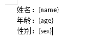

工作中遇到需要根据不同数据来处理模板word的情况，网上搜索了一番之后，找到了一个叫做docxtemplater的库，使用起来非常便携，也十分满足此次的需求。
这次就来记录一下docxtemplater的使用。
docxtemplater官网：https://docxtemplater.readthedocs.io/en/latest/index.html
1. 安装
和其他的库一样，有多种安装方式，这里使用的是npm install
npm install docxtemplater pizzip --save-dev
pizzip 是一个同步压缩文件的库，是JsZip的一个分支
2. 可以直接Copy官网提供的生产word的代码
3. 在word中写入占位符

代码中写入对应的data
运行代码，输出新的word
4. 标签类型
（1）条件
条件标签以＃开始，/结束，如下
当hasKitty为true时，才去渲染其中的内容
（2）循环
循环同样以#开始，/结束，如下
（3）sections
条件标签，循环标签，其实都是基于section的语法，以#开始，/结尾，来构成一个区域，从而获取到对应的数据。